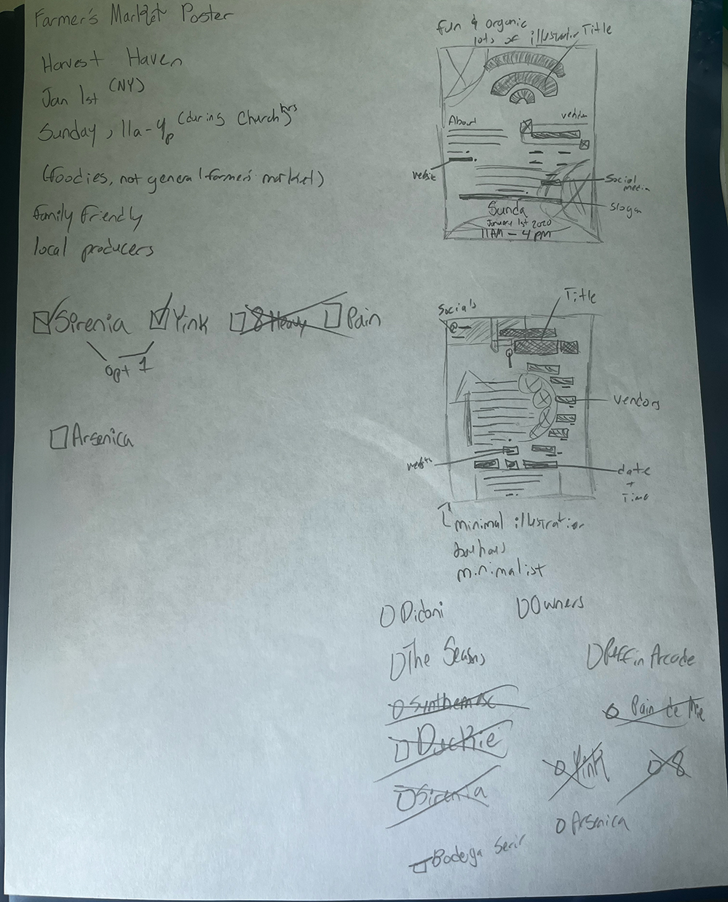
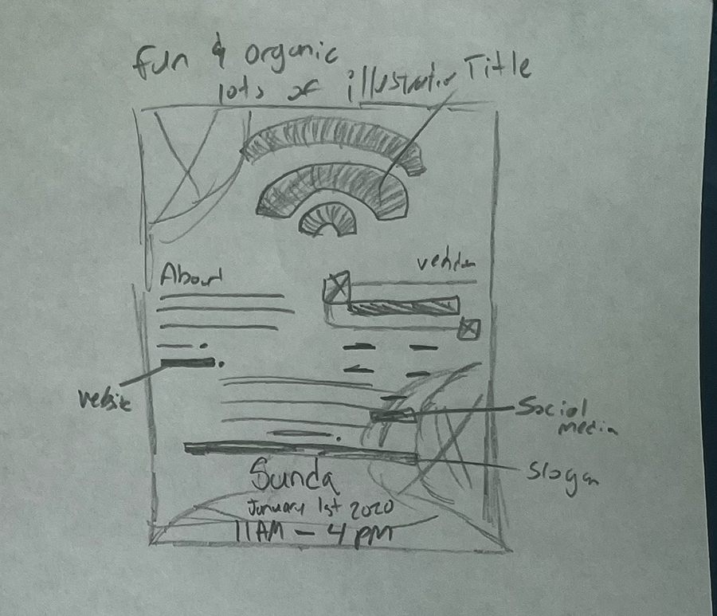
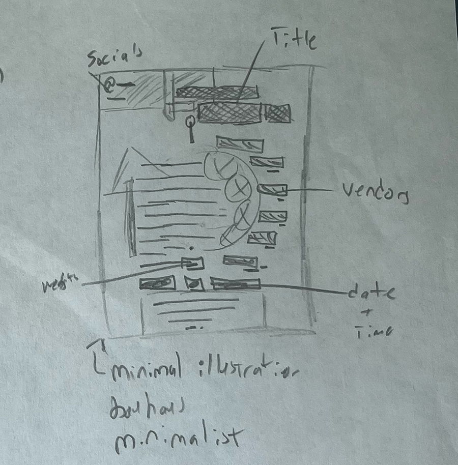
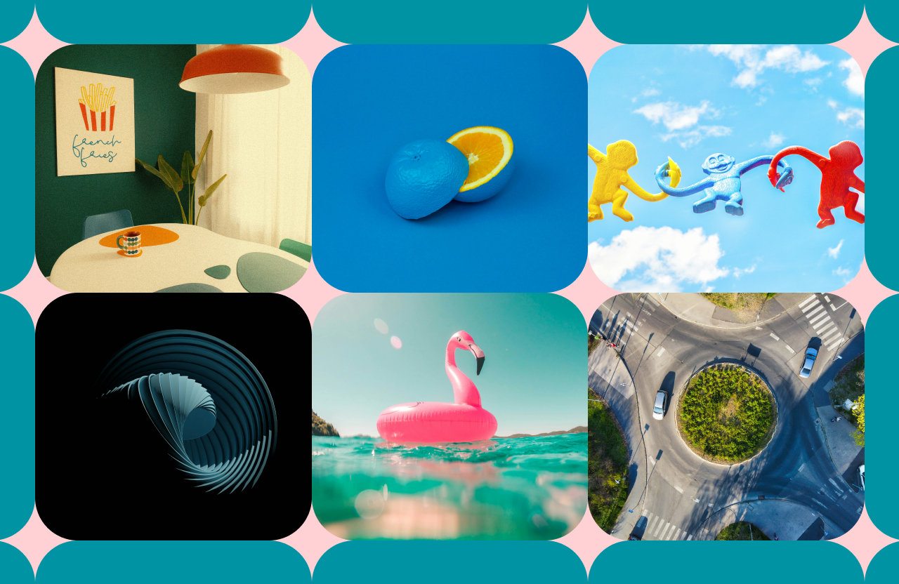
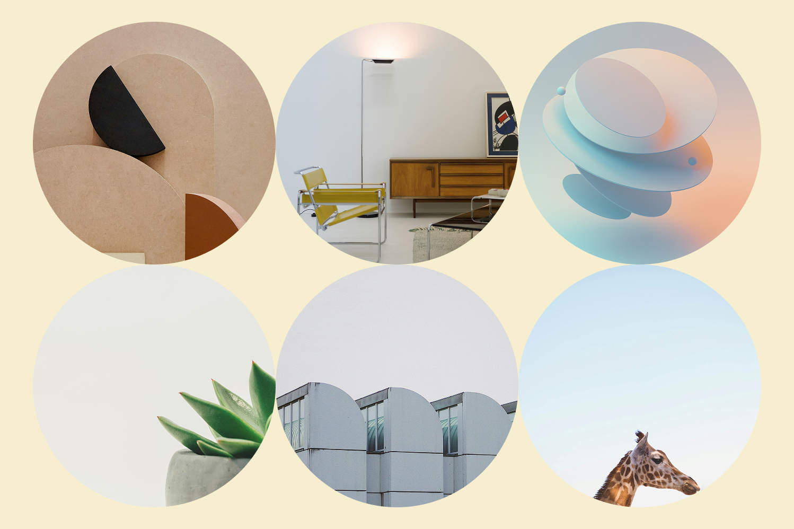
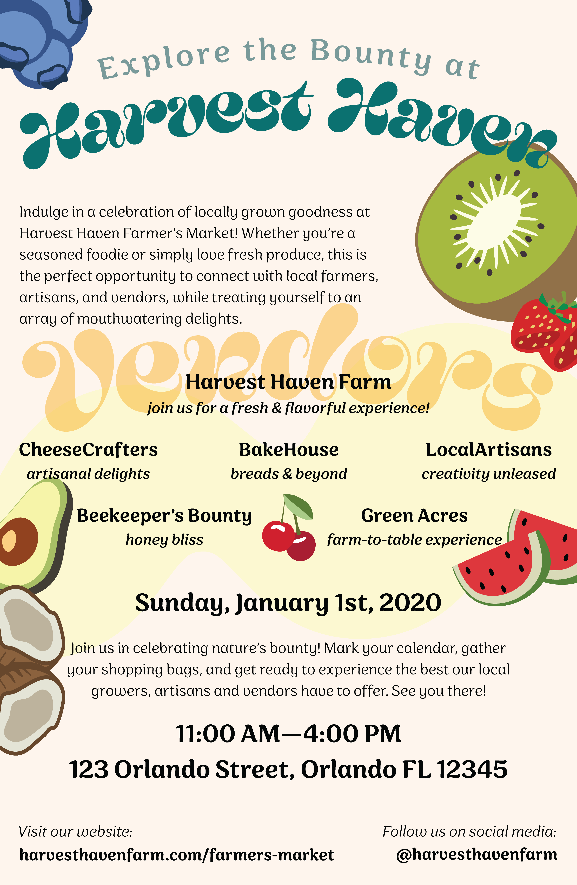
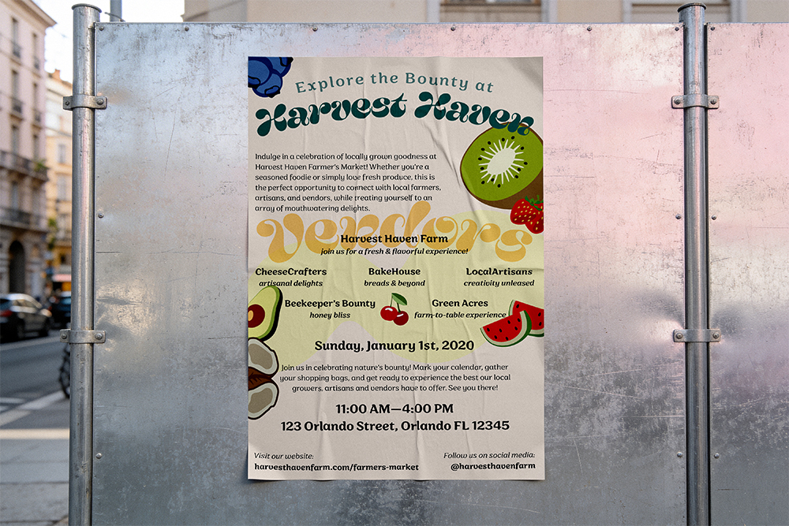
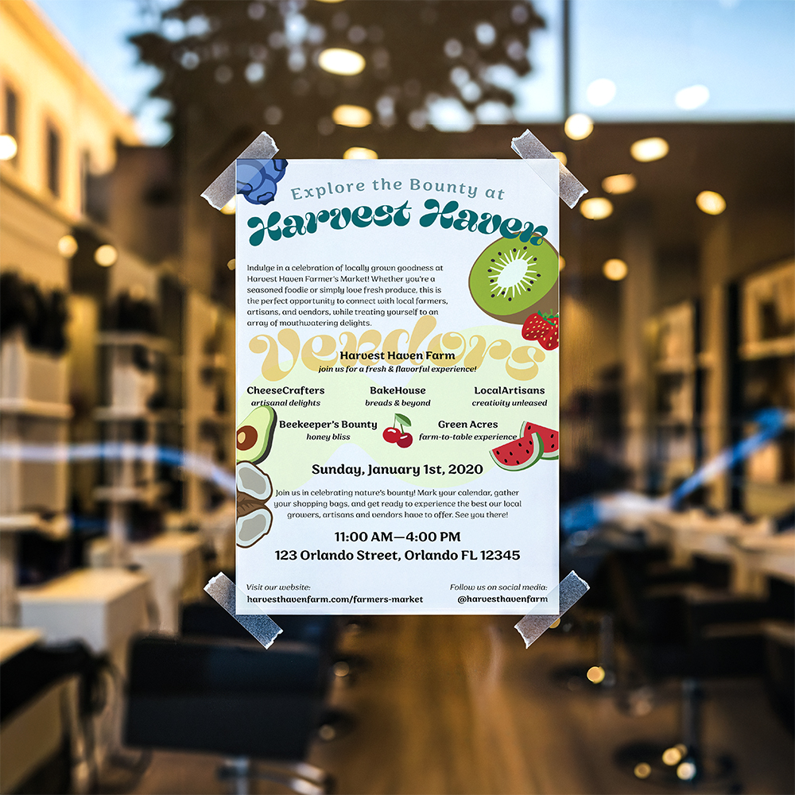

Harvest Haven is a conceptual farmer's market that arrives in Orlando, FL every year on January 1st. For this project, I design a promotional poster for their annual market.
Prompt
The goal was to design a poster for a farmer's market happening in January on the first following a seasonal spring theme.
Solution
Research and ideate two different designs for the poster. Ensure both designs showcase a seasonal aesthetic while being well organized and laid out.
Research & Ideation
For research, I spend some time gathering inspiration, doing thumbnail sketches, and looking through similar posters to see what has been successful and what hasn't been.
I spent some time looking for a font that evoked a fun and organic vibe to fit with the season of growth and the warm tone of the market. To successfully choose and pair the fonts, I made sure to fitler out the most important and hierarchical pieces of copy that needed to stand out and have attention brought to it.
I also spent a bit of time doing a couple more sketches but this time including more annotations and context as opposed to the thumbnails from before.

Closeup of main sketches.


I had also generated two moodboards based on my research. While both moodboards were initially intended for their own respective iterations, the client had enjoyed both moodboards and wanted to see the same tone, vibes, and style communicated in the first ideation sketch which led to me not having two iterations like in the original plan.


Flat Work

Mockups

